FAIRINO FR
협동로봇
구성품과 모델별 사양, 컨트롤 박스 연결, 티칭 펜던트와 WebApp 조작, 좌표계 · TCP와 부하, I/O, 안전 설정, 프로그램 작성, SDK, 유지 보수와 문제 해결까지 FR 협동로봇을 처음 쓸 때 필요한 순서를 정리했습니다.

이 설명서에 대하여
| 로봇 | FAIRINO FR 협동로봇 · 컨트롤 박스 · 티칭 펜던트 |
| 근거 문서 | WeGo Robotics Fair Innovation robot 매뉴얼 (FAIRINO WebApp V4.0.0 기준, 2026.10) — 1 ~ 5장의 구성품 · 연결 · 조작, 10장. FAIRINO 공식 문서(fairino-doc-en.readthedocs.io/latest, 2026-11-19 확인)의 협동로봇 사용자 설명서 — 1장의 사양 · 설치 조건, 2장의 추가 수칙, 3장의 전원 켜기 · 끄기, 6 ~ 9장, 11 · 12장, 부록. 같은 문서의 FR Lua 프로그래밍 스크립트 설명서와 Python SDK 설명서(IO 장) — 7 · 9장의 명령과 번호. 예제 — github.com/FAIR-INNOVATION. 제조사 자료(이 책에 옮기지 않음): FAIRINO Product Manual · FR 협동로봇 사용자 설명서(한국어) · ROS 2 · MoveIt 2 튜토리얼 · 제어기 소프트웨어 업그레이드 · 다운그레이드 방법 · DH Robotics AG-95 그리퍼 설명서 |
| SDK 대조 | fairino-python-sdk (github.com/FAIR-INNOVATION, Apache-2.0, git 8920448)의 Robot.py — 부록의 SDK 포트 |
| 소프트웨어 | FAIRINO WebApp V4.0.0. 6 ~ 9 · 11 · 12장의 메뉴 경로는 FAIRINO 최신 문서 기준 |
| 판 | 한국어판 · 2026.11.20 |
| 문의 | go.support@wego-robotics.com |
1 ~ 5장과 10장은 WeGo가 만든 FR 협동로봇 시작 안내를 WeGo 설명서 형식으로 옮긴 것이며, 안전 수칙을 2장으로 모았습니다. 화면은 WebApp V4.0.0 기준이며, 버전에 따라 메뉴 이름과 위치가 다를 수 있습니다.
사양과 설정 · 점검 · 문제 해결 내용은 FAIRINO 공식 문서에서 사실과 수치만 골라 우리말로 다시 쓴 것입니다. FAIRINO 문서는 저작권이 FAIRINO에 있고 공개 라이선스가 없으므로 글과 그림을 그대로 옮기지 않았습니다. FAIRINO 문서는 최신 소프트웨어를 기준으로 하므로, WebApp V4.0.0 화면과 메뉴 이름 · 위치가 다르면 화면을 따르고 WeGo에 알려 주십시오. 메뉴 이름은 FAIRINO 영문 화면을 따랐으며, 한국어 화면에서는 Initial이 초기설정, System이 시스템 설정으로 나옵니다.
© WeGo Robotics. FAIRINO는 Fairino (Suzhou) Robot Technology Co., Ltd.의 상표입니다. 표지의 FR5 이미지는 FAIRINO가 공개한 URDF 메시(github.com/FAIR-INNOVATION/frcobot_ros, frcobot_description, package.xml 기준 Apache-2.0)를 MuJoCo로 렌더링한 것이고, 본문 그림은 WeGo 자료의 사진과 FAIRINO 소프트웨어 · 문서 화면입니다.
목차
- 01구성품과 사양
- 02중요 안전 수칙
- 03컨트롤 박스 연결
- 04티칭 펜던트로 제어
- 05웹(WebApp)에서 제어
- 06좌표계 · TCP · 부하 설정
- 07I/O
- 08안전 설정
- 09프로그램 작성 기본
- 10SDK로 제어
- 11유지 보수
- 12문제 해결
- 부록빠른 참조
구성품과 사양
FR 협동로봇의 구성품과 모델별 사양, 설치 조건입니다.
구성품
FR 협동로봇의 구성품은 다음과 같습니다. 1 ~ 5번은 그림 1의 번호이며, 6번 티칭 펜던트는 별도 상자에 들어 있습니다.
| 번호 | 구성품 | 비고 |
|---|---|---|
| 1 | FR 로봇팔 (FR robot) | |
| 2 | 전원 케이블 (power cable) | |
| 3 | 비상 정지 버튼 (emergency button) | |
| 4 | 컨트롤 박스 (control box) | |
| 5 | 볼트 4개 (bolt × 4) | 아래 사진과 다를 경우 3번과 5번이 함께 들어 있습니다 |
| 6 | 티칭 펜던트 (Teaching Pendant) | 별도 상자 |
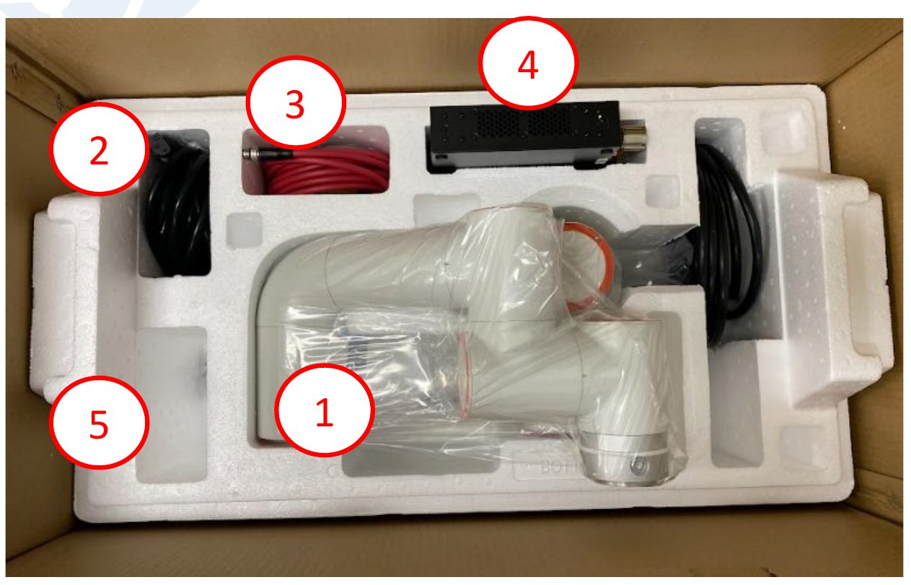
이 책의 비상 정지 버튼(3번)을 FAIRINO 문서는 버튼 박스(button box)라고 부릅니다. 비상 정지 스위치 말고도 시작 · 정지, 운전 모드 전환, 드래그 모드, 포인트 기록 버튼과 이더넷 포트가 있으며, 버튼 구성은 박스 버전(BX01 · BX02)마다 조금씩 다릅니다.
모델별 사양 문서
FR 시리즈는 가반 하중에 따라 모델이 나뉩니다. 아래 값은 FAIRINO 사용자 설명서의 기본 사양표(Robot brief introduction → Basic parameters)에서 옮겼습니다. 이름 뒤에 -C · -WMS · -WML이 붙은 파생 모델은 값이 다르므로 FAIRINO 문서에서 확인하십시오. 받은 로봇의 모델은 제품 명판과 WebApp의 System → About에서 확인합니다.
| 항목 | FR3 | FR5 | FR10 | FR16 | FR20 | FR30 |
|---|---|---|---|---|---|---|
| 가반 하중 | 3 kg | 5 kg | 10 kg | 16 kg | 20 kg | 30 kg |
| 도달 거리 | 622 mm | 922 mm | 1400 mm | 1034 mm | 1854 mm | 1403 mm |
| 반복 정밀도 | ±0.02 mm | ±0.03 mm | ±0.05 mm | ±0.03 mm | ±0.1 mm | ±0.1 mm |
| 관절 최대 속도 | 180°/s | 180°/s | J1 · J2 120°/s, 나머지 180°/s | J1 ~ J3 120°/s, 나머지 180°/s | ||
| 대표 TCP 속도 | 1 m/s | 1 m/s | 1.5 m/s | 1 m/s | 2 m/s | 2 m/s |
| 무게 (약) | 15 kg | 22 kg | 40 kg | 40 kg | 85 kg | 85 kg |
| 소음 | 65 dB 미만 | 70 dB 미만 | ||||
| 공통 | 회전 관절 6개 · 설치 방향 제한 없음 · IP54(IP65 선택) · 사용 온도 0 ~ 45 °C · 습도 90 %RH 이하(결로 없음) · 보관 −25 ~ 60 °C(서리 없음) · 툴 I/O: 전원 24 V 1.5 A, 디지털 · 아날로그 I/O, RS-485 · 통신: I/O, TCP/IP, Modbus TCP/RTU, Profinet, CC-Link, EtherNet/IP, EtherCAT | |||||
관절 동작 범위 문서
소프트 리밋은 소프트웨어가 관절을 멈추는 한계로, 8장에서 이보다 좁게 설정할 수 있습니다. 하드 리밋은 그 바깥의 최종 한계입니다.
| 관절 | 소프트 리밋 | 하드 리밋 |
|---|---|---|
| J1 | ±175° | ±179° |
| J2 | +85° ~ −265° | +89° ~ −269° |
| J3 | FR3 ±150°, FR5 ~ FR30 ±160° | FR3 ±152°, FR5 ~ FR30 ±162° |
| J4 | +85° ~ −265° | +89° ~ −269° |
| J5 | ±175° | ±179° |
| J6 | ±175° | ±179° |
FAIRINO 사양표는 관절 범위를 FR3 한 칸과 FR5 ~ FR30 한 칸으로 묶어 적었고, 두 칸은 J3만 다릅니다. 쓰는 로봇의 실제 한계는 WebApp의 관절 소프트 리밋 화면에서 확인하십시오. 사양표보다 큰 값을 넣으면 설정할 수 있는 최대값으로 바뀝니다(8장).
설치 조건 문서
| 항목 | 내용 |
|---|---|
| 로봇 고정 볼트 | FR3: M6 4개, 10 N·m 이상, 핀 구멍 Ø5 mm · FR5: M8 4개, 20 N·m 이상, Ø8 mm · FR10 · FR16: M8 4개, 25 N·m 이상, Ø8 mm · FR20 · FR30: M10 6개, 45 N·m 이상, Ø8 mm. 볼트 강도는 8.8 이상입니다. 정밀도가 중요하면 핀 2개로 위치를 잡으십시오 |
| 설치 받침 | 로봇 무게의 5배 이상, 1축 토크의 10배 이상을 견디고, 면이 평평하며, 로봇과 공진하지 않아야 합니다. 다른 움직이는 장치와는 분리해 고정하십시오. 판으로 받칠 때는 알루미늄 16 mm 이상 또는 철판 8 mm 이상을 권합니다 |
| 설치 공간 | 팔을 끝까지 뻗어 움직일 수 있도록 3 m × 3 m × 2 m(길이 × 너비 × 설치면 위 높이). 툴을 달면 500 mm 이상 더 비워 두십시오 |
| 툴 플랜지 | M6 나사 구멍 4개, 조임 토크 8 N·m, 볼트 강도 8.8 이상. 위치는 Ø6 핀 구멍으로 잡습니다. 나사 구멍에 8 mm보다 깊이 들어가는 볼트를 쓰면 플랜지가 손상될 수 있습니다 (FR3 ~ FR16 기준, FR20 · FR30은 플랜지 도면이 다름) |
| 사용 환경 | 0 ~ 45 °C, 습도 90 %RH 이하(결로 없음), 고도 2000 m 미만. 충격 · 진동, 부식성 · 폭발성 가스, 액체 · 기름, 염분, 먼지 · 금속 가루, 강한 전자기 잡음이 없는 곳. 로봇 전원 앞에 차단기를 두고, EMC 필터를 권합니다 |
| 컨트롤 박스 위치 | 바닥에서 0.6 ~ 1.5 m, 물에 잠기지 않고 열원에서 떨어진 곳. 방열구 둘레를 비워 두십시오. FAIRINO 문서에는 측면 150 mm · 나머지 100 mm 이상과, 양옆 150 mm · 앞면 250 mm 이상 두 가지가 나오므로 큰 값을 따르십시오 |
| 컨트롤 박스 전원 | 30 ~ 60 VDC, 176 ~ 264 VAC, 100 ~ 240 VAC(50 ~ 60 Hz) 세 종류가 있습니다. AC 두 종류는 겉모습이 같으므로 명판에서 입력 전압을 확인한 뒤 켜십시오. 컨트롤 박스와 로봇은 반드시 접지합니다 |
중요 안전 수칙
이 책은 FR 협동로봇의 연결과 조작, 설정, 점검을 다룹니다. 설치하고 운용하기 전에 FAIRINO 공식 사용자 설명서의 안전 장을 먼저 읽고, 각 장의 경고 · 주의 상자를 지키십시오.
설치 환경, 작업자 안전, 안전 기능은 FAIRINO 공식 사용자 설명서의 ‘Safety’ 장과 ‘Installation’ 장의 ‘Personnel safety’ 절에 있습니다: https://fairino-doc-en.readthedocs.io/latest/CobotsManual/safety.html
이 책에 나오는 경고 · 주의는 다음과 같습니다.
- 패킹 자세로 옮길 때는 로봇의 속도를 줄이십시오.주변 환경을 점검해 로봇이 부딪힐 요인을 없앤 뒤 실행하십시오(4장).
- 그리퍼를 활성화할 때는 그리퍼를 비워 두십시오.활성화할 때 그리퍼에 물체가 없어야 합니다(5장).
- WebApp과 WebRecovery의 네트워크를 겹치지 않게 고르십시오.겹치면 WebApp에 접속하지 못할 수 있습니다(5장).
- WebRecovery에서 업그레이드 · 다운그레이드를 임의로 조작하지 마십시오.WebRecovery는 컨트롤 박스의 Eth0(192.168.57.2)에 있습니다(5장). 제어기 소프트웨어를 업그레이드 · 다운그레이드해야 하면 go.support@wego-robotics.com 으로 문의하십시오.
- 로봇이 닿는 범위 안에 머리와 몸을 두지 마십시오.로봇이 잡을 수 있는 곳에 손가락을 넣지 말고, 로봇이 사람이나 물체 쪽으로 움직이게 하지 마십시오(9장).
- 처음 쓰거나 설정을 바꾼 뒤에는 낮은 속도로 시작하고 안전 기능부터 시험하십시오.FAIRINO는 처음 쓸 때와 변경 뒤에 속도를 250 mm/s 미만으로 두고, 비상 정지 · 보호 정지 입력이 로봇을 멈추는지 먼저 확인하라고 안내합니다(8 · 11장).
- 툴을 단 뒤에는 부하와 설치 방식을 실제대로 설정하십시오.틀리면 드래그 모드에서 팔이 들리거나 처지고, 충돌 감지가 제대로 동작하지 않습니다(6장).
- 기본 비밀번호를 바꾸십시오.WebApp 관리자 계정과 안전 설정 비밀번호를 기본값으로 두면 누구나 안전 설정을 바꿀 수 있습니다(8장).
- 배선은 컨트롤 박스 전원을 끈 상태에서 하십시오.엔드 툴 I/O · 485 커넥터는 전원이 켜진 채로 꽂거나 빼지 마십시오. 안전 입력은 안전 등급이 맞지 않는 PLC나 일반 I/O에 연결하지 마십시오(7장).
- 컨트롤 박스 전원을 끄기 전에 프로그램을 멈추십시오.갑자기 전원을 끊으면 데이터가 손상될 수 있고, 다시 켤 때는 1분 이상 기다려야 합니다(3장).
- 비상 정지와 안전 입력은 한 달에 한 번 시험하십시오.누르면 로봇이 멈추고 관절 전원이 꺼지는지 확인합니다(11장).
컨트롤 박스 연결
전원 케이블, 로봇 케이블, 비상 정지 버튼(또는 티칭 펜던트)을 컨트롤 박스에 연결합니다. 연결 위치는 그림 2과 같습니다.
| 번호 | 케이블 |
|---|---|
| 1 | 전원 케이블 (power cable) |
| 2 | FR 로봇 케이블 (FR robot cable) |
| 3 | 비상 정지 버튼 · 티칭 펜던트 (emergency button / Teaching Pendant) |

전원 켜기와 끄기 문서
- 비상 정지 버튼이 풀려 있는지 확인하십시오.로봇 동작 범위에 사람과 장애물이 없는지도 봅니다.
- 컨트롤 박스의 전원 스위치를 켜십시오.로봇이 활성화되면 로봇 끝단 LED가 초록색으로 켜져 있습니다. LED 색의 뜻은 12장에 있습니다.
- 끌 때는 먼저 프로그램을 모두 멈추십시오.상태 조회(Status Query)를 쓰고 있었다면 끄고, 상태가 Stopped인지 확인한 뒤 전원 스위치를 끕니다. 갑자기 전원을 끊으면 저장된 데이터가 손상될 수 있습니다.
컨트롤 박스 전원을 끈 뒤 다시 켤 때는 1분 이상 기다리십시오.
티칭 펜던트로 제어
티칭 펜던트(TP)로 로그인하고, 관절을 움직이고, 로봇을 패킹 자세로 옮기는 방법입니다.
로그인
- 티칭 펜던트를 컨트롤 박스에 연결하고 전원을 켜십시오.로그인 화면(그림 3)이 나타납니다.
- 가상 키보드를 켜십시오.화면 오른쪽 위의 노란 버튼을 누릅니다.
- 계정 정보를 입력하고 로그인하십시오.user name
admin, password123
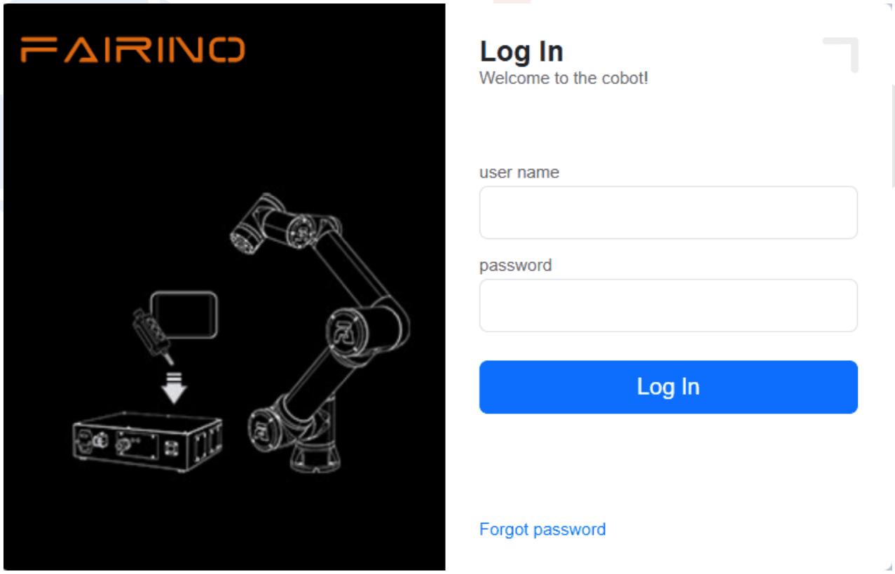
최신 WebApp에서는 티칭 펜던트가 기본으로 꺼져 있습니다. WebApp의 시스템 설정 → 일반 설정 → 네트워크 설정에서 티칭펜던트 사용을 켜고 재부팅한 뒤 사용하십시오. WebApp 접속 방법은 5장에 있습니다.
관절 움직이기
티칭 펜던트 화면의 로봇이 실제 로봇과 같은 자세이면 연결에 성공한 것입니다.

관절(joint)마다 있는 − · + 버튼(그림 5)이나 슬라이드 바(그림 6)로 로봇을 움직일 수 있습니다.

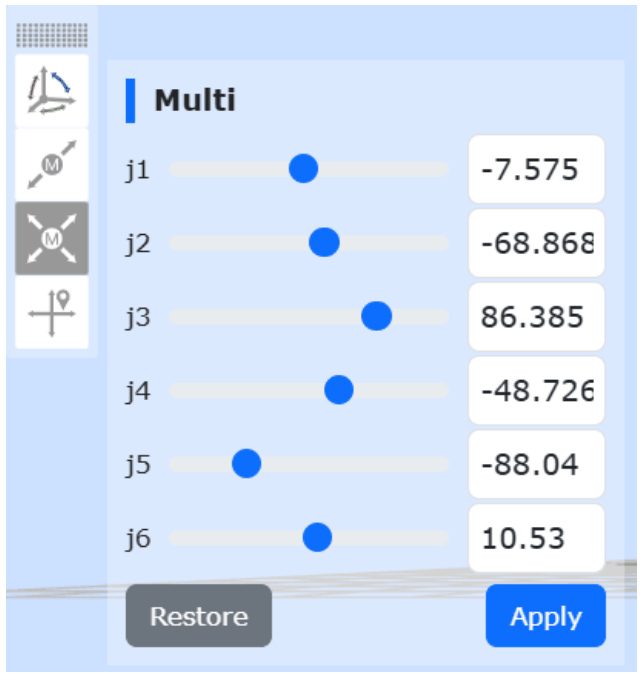
로봇의 속도와 가속도도 설정할 수 있습니다(그림 7).
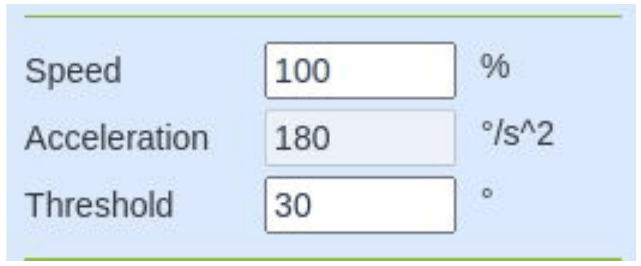
티칭 펜던트의 자세한 사용법은 별도로 제공되는 FAIRINO 사용자 설명서나 FAIRINO 공식 문서 (https://fairino-doc-en.readthedocs.io/latest/)를 참고하십시오.
패킹 자세로 옮기기
Application → Tool App → Robot packing에서 로봇을 패킹(포장) 자세로 초기화할 수 있습니다.
이 기능을 쓸 때는 로봇의 속도를 줄이고, 주변 환경을 점검해 로봇이 부딪힐 요인을 없앤 뒤 실행하십시오.
- Application → Tool App → Robot packing을 여십시오.그림 8의 화면이 나타납니다.
- 로봇을 영점으로 옮기십시오.Move to zero point의 Move를 누릅니다. 화면의 2단계 안내대로, 로봇의 기계적 영점이 맞는지와 각 관절의 주황색 원 안의 틈이 그림처럼 맞춰져 있는지 확인합니다.
- 로봇을 패킹 자세로 옮기십시오.Move to packaging point의 Move를 누릅니다.
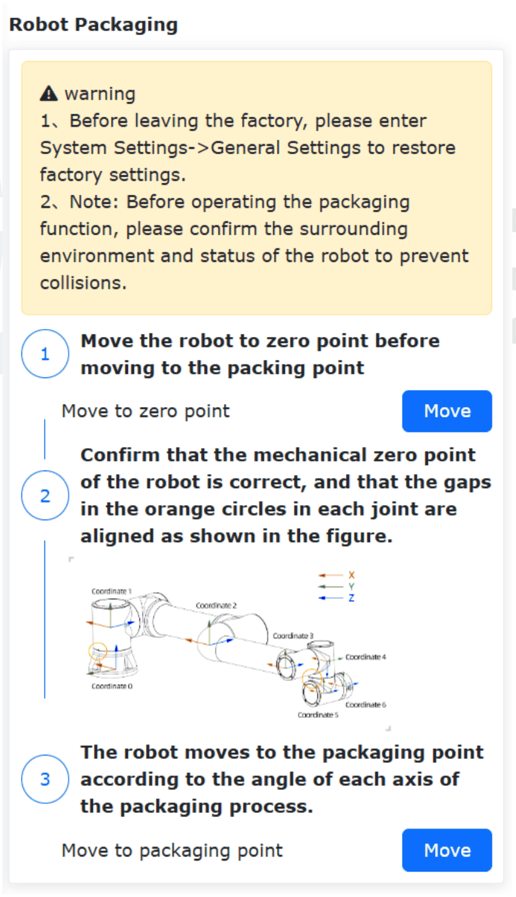
웹(WebApp)에서 제어
노트북을 LAN 케이블로 연결하고 웹 브라우저에서 FAIRINO WebApp에 접속합니다. 그리퍼 설정과 접속 IP 변경도 WebApp에서 합니다.
노트북 연결
티칭 펜던트를 떼어 내고 비상 정지 버튼으로 바꿔 연결한 뒤, LAN 케이블을 노트북에 연결하십시오.
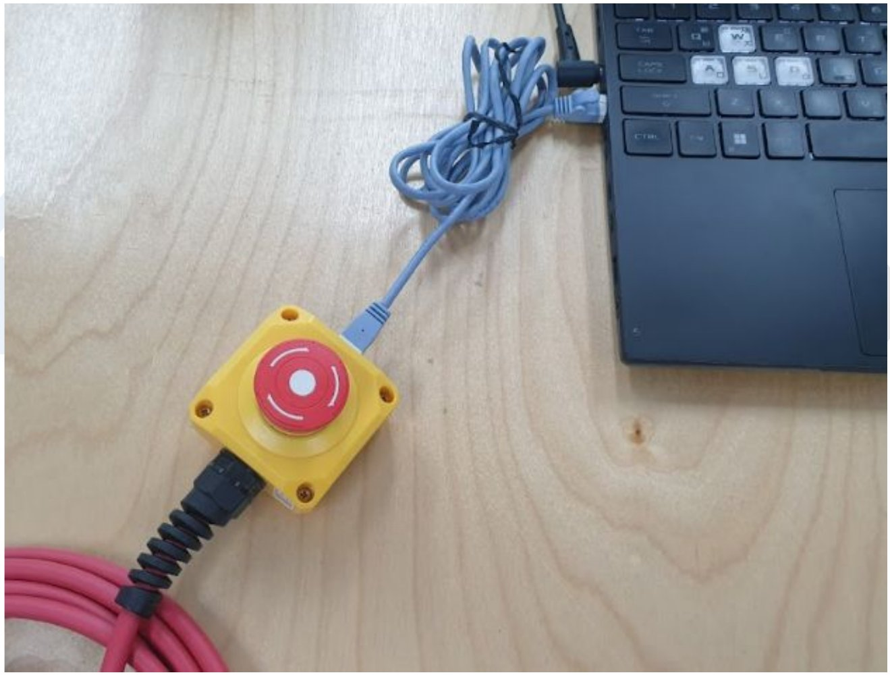
노트북 네트워크 설정 (Ubuntu)
- 유선 설정을 여십시오.LAN 케이블을 연결한 뒤 화면 오른쪽 위를 누르고 Wired Connected → Wired Settings를 누릅니다.

그림 10. Ubuntu 오른쪽 위 메뉴 (WeGo 자료) - Network의 Wired 항목에서 톱니바퀴를 누르십시오.

그림 11. Network 설정의 Wired 항목 (WeGo 자료) - IPv4 주소를 수동으로 설정하십시오.IPv4 탭에서 Manual을 고르고 그림 12처럼 입력합니다.
Address는 192.168.58.2를 뺀 같은 대역(192.168.58.x)의 주소로 정합니다 (그림의 예: Address 192.168.58.99, Netmask 255.255.255.0).
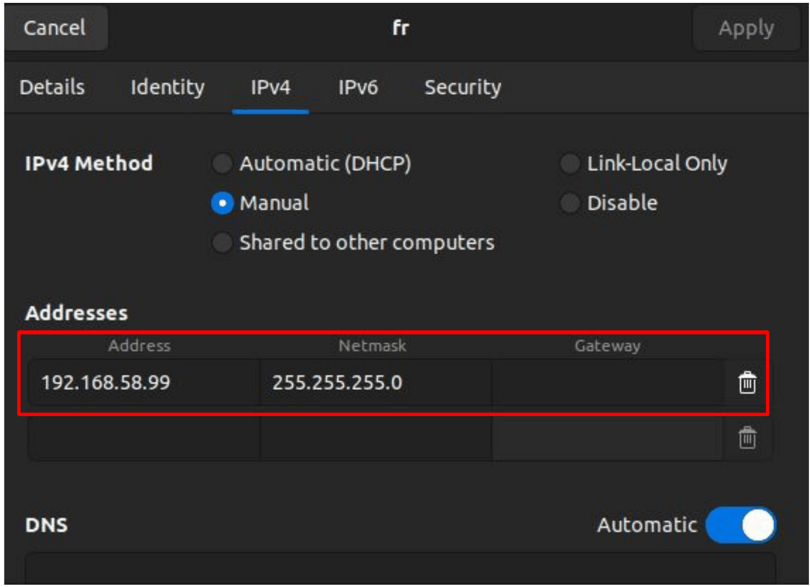
그림 12. IPv4 수동 설정 (WeGo 자료) - Apply를 눌러 저장하십시오.저장한 뒤 Wired 항목의 ON 스위치를 껐다가 다시 켭니다.
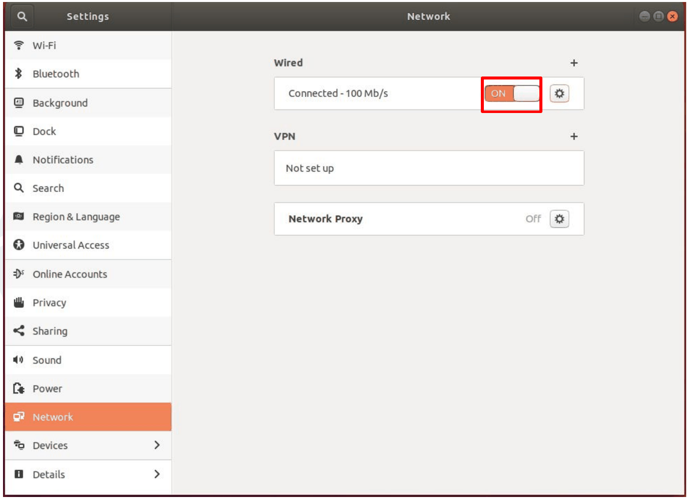
그림 13. Wired 스위치를 껐다가 다시 켜기 (WeGo 자료)
WebApp 접속
웹 브라우저 주소창에 192.168.58.2를 입력하고 로그인하면 그림 14의 화면이 나타납니다.

그리퍼 설정
그리퍼를 로봇에 연결한 뒤 컨트롤 박스를 켜고 WebApp에 들어가십시오.
활성화할 때 그리퍼에 물체가 없어야 합니다.
- 초기설정 → 주변기기 → 그리퍼 → Device adapted를 고르십시오.
- 사용할 그리퍼에 맞게 설정하고 Configure를 누르십시오.제조사(manufacturer), 유형(Type), 소프트웨어 버전(Software version), 장착 위치(Mount location)를 고릅니다.
- Reset → Active를 누르십시오.그리퍼가 활성화됩니다.

접속 IP 변경
시스템 설정 → 일반 설정에서 접속 IP를 바꿀 수 있습니다. 네트워크 설정을 누른 뒤 재부팅하라는 창이 뜨면 재부팅하십시오.
| 포트 | 장치 | IP | 비고 |
|---|---|---|---|
| Eth0 | 컨트롤 박스 (Control Box) | 192.168.57.2 | WebRecovery. 업그레이드 · 다운그레이드 임의 조작 금지 |
| Eth1 | 비상 정지 버튼 (Emergency Stop Button) | 192.168.58.2 | WebApp 접속 주소 |
그림 16처럼 WebApp과 WebRecovery의 네트워크를 겹치지 않게 고르십시오. 겹치면 WebApp에 접속하지 못할 수 있습니다.
Eth0(192.168.57.2)의 WebRecovery에서 업그레이드 · 다운그레이드를 임의로 조작하지 마십시오.
티칭펜던트 사용을 켜면 WebApp은 Eth1(192.168.58.2)로 고정됩니다.

좌표계 · TCP · 부하 설정
툴을 달면 툴 좌표(TCP)와 부하를, 작업대나 지그를 기준으로 움직이려면 작업물 좌표를 설정합니다. 설치 방식도 실제와 같아야 합니다. 모두 WebApp의 Initial(초기설정) → Base 아래에 있습니다.
좌표계 문서
위치는 x, y, z(mm), 자세는 rx, ry, rz(°)로 나타냅니다. 지금 쓰고 있는 툴 · 작업물 좌표 번호와 부하 번호는 WebApp 오른쪽 위 상태 영역에서 볼 수 있습니다.
| 좌표계 | 기준과 쓰임 | 번호 |
|---|---|---|
| 베이스 (Base) | 로봇 베이스가 원점입니다. 다른 좌표계의 기준입니다 | — |
| 툴 (Tool, TCP) | 툴 끝점(TCP)이 원점입니다. toolcoord0은 툴 없이 끝단 플랜지 중심을 뜻하며, 툴은 toolcoord1부터 보정해 씁니다 | toolcoord0 ~ |
| 작업물 (Workpiece) | 작업대 · 지그가 원점입니다. wobjcoord0은 베이스 원점과 같습니다 | wobjcoord0 ~ 14 |
| 외부 툴 (Ext. TCP) | 로봇 밖에 고정한 툴입니다. 로봇이 작업물을 들고 고정된 툴로 가져가는 작업에 씁니다 | etoolcoord0 ~ 14 |
FR 시리즈는 rx, ry, rz를 움직이는 좌표계 기준 Z → Y → X 순서의 회전으로 계산합니다. 다른 소프트웨어와 자세 값을 주고받을 때 회전 순서를 맞추십시오.
설치 방식 문서
기본값은 바닥 설치입니다. 벽이나 천장에 달았다면 Initial → Base → Installation에서 바꾸십시오. 바닥(정방향) · 측면 · 천장(역방향) 버튼을 누르거나, 그 밖의 각도는 베이스 기울기(Base Tilt)와 베이스 회전(Base Rotation)을 직접 넣고 Apply를 누릅니다. 3D 화면의 로봇 모델이 바뀐 설치 방식으로 표시됩니다.
설정한 설치 방식이 실제와 다르면 드래그 모드와 충돌 감지가 잘못 동작해 위험합니다.
툴 좌표(TCP) 보정 문서
보정 방법은 두 가지입니다. 4점법은 TCP의 위치만 구하고 자세는 끝단 플랜지와 같게 둡니다. 6점법은 점 두 개를 더 써서 툴의 자세까지 구합니다. 아래는 6점법입니다. 뾰족한 핀 끝처럼 기준으로 삼을 고정점을 작업 공간에 하나 마련해 두십시오.
- 툴을 달고 Initial → Base → TCP를 여십시오.
- 먼저
toolcoord0을 고르고 Apply를 누르십시오.보정은 플랜지 기준 상태에서 해야 합니다. - 보정할 번호(
toolcoord1등)를 고르고 Modify를 누르십시오.보정 방법으로 6점법을 고릅니다. - 1 ~ 3점: 툴 끝을 서로 다른 자세 세 가지로 고정점에 맞추고 하나씩 저장하십시오.자세 차이가 클수록 결과가 정확합니다.
- 4점: 툴을 수직으로 세워 고정점에 맞추고 저장하십시오.
- 5점: 자세를 그대로 두고 베이스 좌표로 수평 이동한 뒤 저장하십시오.이 방향이 툴 좌표의 X+입니다.
- 6점: 고정점으로 돌아와 수직으로 이동한 뒤 저장하십시오.이 방향이 툴 좌표의 Z+이고, Y는 오른손 법칙으로 정해집니다.
- Calculate → Finish → Save를 누르고, 새 번호를 Apply하십시오. 다시 하려면 Cancel을 누르고 Modify부터 합니다.
툴을 달고 툴 좌표를 보정 · 적용하지 않으면, 운동 명령을 실행할 때 TCP의 위치와 자세가 기대한 값과 달라집니다.
툴 모델 파일(.stl · .dae)을 불러오면 3D 화면의 로봇 끝단에 툴이 함께 표시됩니다.
작업물 좌표 보정 문서
작업물 좌표는 툴 좌표를 기준으로 잡으므로, 툴 좌표를 먼저 보정 · 적용하십시오.
- 작업물을 고정하고 Initial → Base → Workpiece를 여십시오.
wobjcoord0을 먼저 Apply한 뒤, 보정할 번호를 고르고 Modify를 누르십시오.- 보정 방법을 고르고 점 세 개를 저장하십시오.원점 – X축 – Z축 또는 원점 – X축 – XY+ 평면입니다. 첫 두 점(원점, X축 위의 한 점)은 같고, 세 번째 점으로 Z축 방향을 정하거나 XY+ 평면 위의 한 점을 정합니다.
- Calculate → Finish → Save를 누르고, 새 번호를 Apply하십시오.
외부 툴 좌표는 Initial → Base → Ext. TCP에서 같은 순서로 보정합니다. 3점법은 측정 툴의 TCP를 외부 툴 끝에 맞춘 점, 거기서 외부 툴의 X축 방향으로 옮긴 점, 다시 돌아와 Z축 방향으로 옮긴 점을 저장합니다.
엔드 부하 문서
- Initial → Base → Payload를 여십시오.
- 툴 질량(kg)과 무게중심 X, Y, Z(mm, 0 ~ 1000)를 넣고 Apply를 누르십시오.질량은 모델의 가반 하중(FR3 3 kg … FR30 30 kg)을 넘을 수 없습니다.
- 질량이나 무게중심을 모르면 자동 식별을 쓰십시오.부하를 단 상태에서 측정 동작을 시작하고, 끝나면 결과를 가져와 Apply합니다. 측정 동작 중에는 언제든 멈출 수 있게 비상 정지 버튼 곁에 있으십시오.
부하 무게나 무게중심이 틀리면 드래그 모드에서 팔이 들리거나 떨어질 수 있고, 충돌 감지가 제대로 동작하지 않습니다. FAIRINO 제어기는 이를 막으려고 드래그 모드에 들어가기 전에 관절 토크를 검사하며, 범위를 벗어나면 드래그 모드를 막고 오류를 냅니다.
I/O
컨트롤 박스 단자대와 로봇 끝단 커넥터로 그리퍼 · 센서 · PLC 같은 장치와 신호를 주고받습니다. 단자 위치와 배선 예는 FAIRINO 사용자 설명서의 Installation → Control connection 절에 있습니다.
배선은 컨트롤 박스 전원을 끄고 하십시오. 안전 입력(EI · SI)은 두 채널이 따로 동작해야 하므로 두 채널을 서로 분리해 배선하고, 안전 등급이 맞지 않는 PLC나 일반 I/O에 연결하지 마십시오. 안전 기능이 무력해질 수 있습니다.
컨트롤 박스 I/O 문서
표준 컨트롤 박스와 일체형 미니 컨트롤 박스(mini BOX)는 아래 신호를 함께 갖추고 있으며, 단자 배치가 다르고 미니 박스에는 단자가 몇 개 더 있습니다.
| 신호 | 단자 | 내용 |
|---|---|---|
| 범용 디지털 입력 | DI0 ~ DI7 | 24 V, NPN. AC 넓은 전압 박스는 박스 안 DIP 스위치로 PNP를 고를 수 있습니다(출하 시 NPN) |
| 설정 가능 디지털 입력 | CI0 ~ CI7 | 사양은 DI와 같고, 시작 · 정지 · 수동/자동 전환 같은 기능을 지정할 수 있습니다 |
| 범용 디지털 출력 | DO0 ~ DO7 | 24 V, NPN(AC 넓은 전압 박스는 NPN · PNP). 채널당 허용 전류는 아래 표 |
| 설정 가능 디지털 출력 | CO0 ~ CO7 | 기능을 지정할 수 있습니다. 기본은 CO0 = 로봇 오류, CO1 = 로봇 동작 중 |
| 아날로그 입력 | AI0 · AI1 | 0 ~ 10 V 또는 0 ~ 20 mA, 12비트. 전압 · 전류는 박스 안 스위치로 고릅니다 |
| 아날로그 출력 | AO0 · AO1 | 0 ~ 10 V 또는 0 ~ 20 mA, 12비트. 전압 · 전류는 박스 안 스위치로 고릅니다 |
| 안전 입력 | EI0 · EI1, SI0 · SI1 | EI는 비상 정지, SI는 안전 정지(문 스위치 등) 입력이며, 둘 다 2채널입니다. 출하 시에는 단락 배선이 꽂혀 있어 추가 안전 장치 없이 동작합니다 |
| 그 밖 | 24V · GND, ex24V · exGND, 485, 엔코더 | I/O용 내부 24 V 전원, 외부 24 V 입력, RS-485, 엔코더 입력 |
디지털 입력은 11 ~ 30 V에서 ON, −3 ~ 5 V에서 OFF로 읽습니다. I/O 전원은 기본으로 내부 24 V(최대 1.5 A)를 쓰며, 부하가 크면 ex24V · exGND 단자에 외부 24 V 전원(최대 2 A)을 연결합니다. 아날로그 신호는 장치와 컨트롤 박스의 GND를 같이 쓰고, 차폐선이나 꼬임선을 쓰면 정확합니다.
| 컨트롤 박스 | I/O 전원 | 채널 1 ~ 4 | 채널 5 ~ 8 | 채널 9 ~ 16 |
|---|---|---|---|---|
| DC · AC 좁은 전압 | 외부 24 V | 400 mA | 250 mA | 125 mA |
| DC · AC 좁은 전압 | 내부 24 V | 300 mA | 190 mA | 90 mA |
| AC 넓은 전압 | 외부 · 내부 | 채널 1 · 2: 200 mA, 3 ~ 8: 100 mA, 9 ~ 16: 60 mA | ||
엔드 툴 I/O 문서
로봇 끝단에는 I/O용 M12 8핀 커넥터와 RS-485용 5핀 커넥터가 있습니다. 툴 전원은 24 V, 최대 1.5 A입니다.
| 핀 | 신호 |
|---|---|
| 1 | AI0 |
| 2 | AO0 |
| 3 | DI0 |
| 4 | DI1 |
| 5 | 24V |
| 6 | DO0 |
| 7 | DO1 |
| 8 | GND |
| 핀 | 신호 |
|---|---|
| 1 | 485-A |
| 2 | 485-B |
| 3 | 24V |
| 4 | 없음 |
| 5 | GND |
끝단 DI0 · DI1에도 기능을 지정할 수 있습니다. 기본은 DI0 = 드래그 모드, DI1 = 티칭 포인트 기록입니다.
끝단 I/O와 485 커넥터는 전원이 켜진 상태에서 꽂거나 빼지 마십시오.
WebApp에서 I/O 다루기 문서
- 수동 출력: WebApp 아래쪽 보조 기능 표시줄(그림 14의 8번)의 I/O에서 컨트롤 박스와 끝단의 DO를 켜고 끄며, AO는 0 ~ 100 %로 넣습니다. 100 %가 10 V(전류 모드는 20 mA)입니다.
- 상태 보기: 오른쪽 상태 영역(9번)의 I/O 항목에서 입력 · 출력 상태를 봅니다.
- 기능 지정: Initial → Base → I/O setup의 DI · DO 설정에서 CI0 ~ CI7, CO0 ~ CO7, 끝단 DI0 · DI1에 기능을 지정하고, 신호를 High와 Low 중 어느 쪽에서 유효로 볼지 고릅니다. 입력 기능에는 시작 · 정지 · 일시정지/재개 · 수동/자동 전환 · 드래그 · 오류 해제 · 활성화 등이, 출력 기능에는 오류 · 동작 중 · 안전 상태 · 간섭 영역 진입 등이 있습니다.
- 별칭 · 필터 · 출력 리셋: 같은 메뉴에서 I/O에 이름을 붙이고, 입력 필터 시간(0 ~ 200 ms)을 정하고, 프로그램을 멈추거나 일시정지했을 때 출력을 유지할지 되돌릴지 정합니다.
기능을 지정한 DI · DO는 프로그램에서 쓰지 마십시오. 기능을 바꾼 뒤에는 제어기를 다시 시작하고, I/O 상태 화면에서 신호가 맞게 바뀌는지 확인하십시오.
프로그램 · SDK의 I/O 번호 문서
프로그램(Lua)과 SDK는 DO와 CO, DI와 CI를 한 줄 번호로 씁니다.
| 대상 | 번호 | 명령 예 |
|---|---|---|
| 컨트롤 박스 디지털 출력 | 0 ~ 7 = DO0 ~ DO7, 8 ~ 15 = CO0 ~ CO7 | Lua · SDK SetDO |
| 컨트롤 박스 디지털 입력 | 0 ~ 7 = DI0 ~ DI7, 8 ~ 15 = CI0 ~ CI7 | Lua WaitDI, SDK GetDI |
| 끝단 디지털 출력 · 입력 | 0 · 1 | SetToolDO · GetToolDI |
| 컨트롤 박스 아날로그 출력 · 입력 | 0 · 1, 값은 0 ~ 100 % | SDK SetAO · GetAI |
| 끝단 아날로그 출력 · 입력 | 0, 값은 0 ~ 100 % | SDK SetToolAO · GetToolAI |
안전 설정
충돌 감지, 관절 범위, 속도 제한, 안전 벽 · 간섭 영역, 비상 정지 · 보호 정지 방식을 WebApp에서 설정합니다. 안전 설정은 설치 현장의 위험성 평가에 따라 정하고, 바꾼 뒤에는 반드시 시험하십시오.
안전 설정 잠금과 체크섬 문서
- 안전 관련 설정은 Initial → Safety에 모여 있습니다. 바꾸려면 먼저 안전 설정 비밀번호를 넣어 잠금을 풉니다.
FAIRINO 문서에 적힌 기본값은
12345678입니다. 처음 설정할 때 8자 이상, 대 · 소문자 · 숫자 · 특수 문자를 섞은 비밀번호로 바꾸십시오. 1분이 안 되는 간격으로 5번 연속 틀리면 1분 동안 입력이 잠깁니다. - 값을 바꾸고 Apply를 누르면 확인 창이 한 번 더 뜹니다. Confirm을 눌러야 적용됩니다.
- 화면 오른쪽 위의 8자리 16진수가 안전 설정 체크섬입니다. 안전 설정이 바뀌면 값도 바뀝니다. 누르면 현재 안전 설정 목록이 나오고, PDF 보고서로 내려받을 수 있습니다. 안전 설정을 확정한 뒤 체크섬을 기록해 두면 나중에 설정이 바뀌었는지 바로 알 수 있습니다.
- WebApp 관리자 비밀번호도 바꾸고, 사람마다 권한에 맞는 계정을 만들어 쓰십시오(System → Account settings).
FAIRINO 문서에는 관절 소프트 리밋과 충돌 등급이 Initial → Safety → Joints 아래로도, Initial → Base → Joint 아래로도 나옵니다. 소프트웨어 버전에 따라 다르므로, 한 곳에 없으면 다른 곳을 보십시오.
충돌 감지 문서
충돌 등급(Collision Level)은 1 ~ 10등급입니다. 1 ~ 3등급이 가장 민감하며, 이때는 권장 속도로 움직여야 합니다. 백분율로 직접 정할 수도 있으며 100 %가 10등급입니다. 충돌 감지는 부하와 설치 방식이 맞아야 정확합니다(6장).
| 전략 | 동작 |
|---|---|
| 충돌 시 정지 · 일시정지 | 오류를 내고 멈추거나, 일시정지합니다 |
| 계속 움직임 | 충돌을 감지해도 동작을 계속합니다 |
| 중력 토크 모드 | 충돌 힘의 크기와 방향에 따라 충돌점에서 물러납니다 |
| 진동 응답 모드 | 충돌점에서 물러났다가 충돌 위치로 돌아옵니다 |
| 충돌 반동 모드 | 설정값에 따라 가속해 물러납니다. 안전 시간 1000 ~ 2000 ms, 안전 거리 150 ~ 200 mm, 안전 속도 50 ~ 250 mm/s, 안전 계수 1 ~ 10 |
중력 토크 · 진동 응답 · 충돌 반동 모드는 끼임을 줄이려는 전략으로, 걸리면 드래그 모드로 바뀌었다가 수동 모드로 돌아갑니다.
관절 소프트 리밋 문서
- Initial → Safety → Joints → Joint Soft Limits를 여십시오.
- 관절마다 + · − 한계를 넣으십시오.1장 사양표의 소프트 리밋보다 큰 값을 넣으면 설정할 수 있는 최대값으로 바뀝니다.
- 모든 관절의 현재 각도가 새 범위 안에 있는지 확인하고 Apply를 누르십시오.범위 밖이면 오류가 납니다. 그 관절을 조그나 드래그로 범위 안으로 옮긴 뒤 다시 적용합니다.
- 필요하면 소프트 리밋 보호(Joint Soft Limit Protection)를 켜십시오.드래그 티칭 중에도 한계 근처에서 저항이 느껴지며 넘어가지 않습니다.
소프트 리밋 오류가 나서 움직이지 않으면 드래그 모드로 관절을 범위 안으로 옮기십시오.
속도 제한과 축소 모드 문서
| 설정 | 내용 |
|---|---|
| Robot Speed | 최대 직선 속도 · 직선 가속도 · 관절 각가속도를 제한합니다 |
| Safety Speed | 사용 범위(끔 · 수동 모드에서만 · 모든 모드), 속도 한계(TCP 수동 속도 1 ~ 1500 mm/s), 넘었을 때 처리(정지 후 알람 · 자동 속도 제한 · 정지 후 알람과 비활성화)를 고릅니다. 자동 속도 제한은 수동 모드에서만 쓸 수 있습니다 |
| Reduced Mode | 1단계 · 2단계 축소 모드의 관절 속도와 TCP 속도를 정합니다. 3단계는 정지입니다. 축소 모드는 CI 기능 지정이나 안전 정지 전략으로 들어갑니다 |
| Stop Deceleration | 멈출 때 관절별로 감속할지(Free Stop), TCP 속도를 기준으로 감속할지(Synchronized Stop)와 감속 비율을 정합니다 |
비상 정지와 보호 정지 문서
비상 정지 버튼은 범주 0 정지가 기본입니다. 누르면 로봇의 모든 동작이 바로 멈춥니다. 범주 0으로 멈췄다면 전원을 끄고, 비상 정지 버튼을 돌려 풀고, 전원을 다시 켜서 로봇을 활성화합니다. Initial → Safety → Emergency Stop에서 정지 유형과 정지 시간 · 거리 한계를 정할 수 있습니다. 고를 수 있는 유형은 컨트롤 박스 하드웨어에 따라 다를 수 있습니다.
| 유형 | 동작 |
|---|---|
| 0 | 컨트롤 박스가 곧바로 로봇 전원을 끊습니다 |
| 1a | 감속해 멈춘 뒤 로봇 전원을 끊습니다 |
| 1b | 감속해 멈춘 뒤 전원은 두고 로봇을 비활성화합니다 |
| 2 | 감속해 멈추고 활성 상태를 유지합니다. 비상 정지를 풀면 바로 다시 쓸 수 있습니다 |
보호 정지(Protective Stop)는 컨트롤 박스의 안전 정지 입력(SI)으로 걸립니다. 유형 0은 전원을 끊고 관절 브레이크를 겁니다. 유형 1은 감속해 멈춘 뒤 전원을 끊고 브레이크를 겁니다. 유형 2는 감속해 멈추고 전원을 유지하며 브레이크를 걸지 않습니다. Safety Stop 메뉴에서는 안전 정지가 걸렸을 때의 동작(정지 · 일시정지 · 1 · 2단계 축소 모드)과 해제 방식(기본: 신호가 돌아오면 자동 해제, 2채널: 화면에서 직접 해제)을 고릅니다.
| 모델 | J1 | J2 | J3 | J4 | J5 | J6 |
|---|---|---|---|---|---|---|
| FR3 | 400 | 470 | 450 | 280 | 120 | 90 |
| FR5 | 420 | 500 | 480 | 310 | 150 | 120 |
| FR10 | 460 | 540 | 510 | 330 | 170 | 140 |
| FR16 | 440 | 530 | 490 | 320 | 160 | 130 |
| FR20 | 540 | 600 | 700 | 400 | 260 | 170 |
정지 거리와 안전 정지 · 소프트 리밋 정지의 값은 FAIRINO 사용자 설명서 Installation → Emergency stop 절에 있습니다. 위험성 평가와 안전 거리 계산에 쓰십시오.
안전 벽과 간섭 영역 문서
- 안전 벽(Safety Wall): 벽마다 기준점 네 개를 저장합니다. 1 ~ 3번 점으로 벽 평면을 정하고, 4번 점으로 안전한 쪽을 정합니다. 안전 거리(기본 0)를 넣고 계산한 뒤 벽을 켭니다. TCP가 안전한 쪽을 벗어나면 오류가 납니다.
- 간섭 영역(Interference Zone): 관절 범위로 정하는 축 간섭과, 베이스 또는 작업물 좌표의 직육면체 간섭이 있습니다. 직육면체는 마주 보는 두 꼭짓점이나 중심점과 변 길이로 정합니다. 영역 안 · 밖 중 어느 쪽을 간섭으로 볼지, 명령 위치와 실제 위치 중 무엇으로 감지할지, 들어갔을 때 계속 움직일지 멈출지, 드래그 중에는 어떻게 할지를 고릅니다. DO 기능 '간섭 영역 진입'으로 외부 장치에 알릴 수 있습니다(7장).
통신 포트와 HTTPS 문서
FAIRINO 소프트웨어 V4.0.0부터 네트워크 보안 기능이 들어 있습니다. 기능 안전(Functional Safety) 모드에서는 SDK · Modbus TCP · Modbus RTU · CNDE로 로봇을 제어하는 기능이 기본으로 꺼져 있습니다. 필요한 것만 Initial → Safety → 네트워크 보안(Cybersecurity) → Communication Ports에서 켜십시오(안전 설정 비밀번호 필요). 기능 안전 모드가 아니면 모든 통신 기능이 켜져 있습니다. 같은 버전부터 WebApp은 HTTPS(TLS 1.2)를 쓰므로, 로봇 인증서를 설치하지 않으면 브라우저가 안전하지 않은 연결이라고 경고할 수 있습니다(12장).
SDK의 XML-RPC, CNDE, Modbus 통신은 암호화되지 않습니다. 로봇은 외부와 분리된 믿을 수 있는 네트워크에만 연결하고, 쓰지 않는 제어 기능은 꺼 두십시오.
프로그램 작성 기본
티칭 포인트를 저장하고, 포인트를 잇는 운동 명령으로 프로그램을 만들어 실행합니다. 프로그램은 WebApp의 Program 메뉴에서 만들며, FR Lua 스크립트로 저장됩니다.
로봇이 닿는 범위 안에 머리와 몸을 두지 말고, 로봇이 잡을 수 있는 곳에 손가락을 넣지 마십시오. 새 프로그램은 낮은 속도로 한 줄씩 확인한 뒤 자동 실행하십시오.
운전 모드와 상태 문서
- 수동 모드(Manual): 조그 · 드래그로 로봇을 움직이고 포인트를 티칭합니다. 자동 모드(Automatic): 프로그램을 실행합니다. 모드는 WebApp 오른쪽 위 상태 영역(그림 14의 5번)이나 버튼 박스의 운전 모드 버튼으로 바꿉니다.
- 위쪽 가운데 제어 영역(4번)에는 활성화 · 시작 · 정지 · 일시정지/재개 버튼이 있습니다.
- 로봇 상태는 Stopped(정지) · Running(실행) · Pause(일시정지) · Drag(드래그)로 표시됩니다.
- 실제 속도는 로봇 최대 속도 × 전역 속도(상태 영역의 Speed) × 명령의 속도 % 입니다.
포인트 티칭 문서
- 수동 모드에서 로봇을 목표 위치로 옮기십시오.끝단의 드래그 버튼을 누른 채 손으로 끌거나(드래그 티칭), 3D 화면 왼쪽의 조그 패널(7번)로 움직입니다.
- 아래쪽 Point 패널(8번)에 포인트 이름을 넣고 Add를 누르십시오.저장되는 좌표는 지금 적용된 툴 · 작업물 좌표 기준입니다(6장). 버튼 박스의 포인트 기록 버튼이나 끝단 DI1로도 저장할 수 있습니다.
- Program → Points에서 저장한 포인트를 확인하십시오.값(x, y, z, rx, ry, rz, v)을 고치거나 지우고, 가져오기 · 내보내기를 하며, Start Run으로 그 포인트까지 PTP 또는 Lin으로 움직여 볼 수 있습니다. 고친 좌표가 로봇의 작업 범위를 넘지 않게 하십시오.
새 프로그램 만들기 문서
- Program → Coding을 열고 New를 누르십시오.템플릿(빈 템플릿 등)을 고르고 파일 이름을 정합니다.
- 왼쪽 명령 목록에서 PTP를 눌러 목표 포인트와 속도를 고르고 Add → Apply를 누르십시오. PTP는 제어기가 고른 최적 경로로, Lin은 직선으로 움직입니다. 부드럽게 이어 갈 시간이나 오프셋도 여기서 정합니다. 같은 종류의 명령 여러 개는 Add로 쌓은 뒤 Apply로 한 번에 넣을 수 있습니다.
- 필요한 명령을 모두 넣고 Save를 누르십시오.도구 모음에서 노드를 복사 · 잘라 내기 · 붙여 넣기 · 삭제하고, 위아래로 옮길 수 있습니다.
- 수동 모드에서 한 줄씩 확인하십시오.각 노드 오른쪽의 첫 번째 아이콘을 누르면 그 명령만 실행합니다.
- 자동 모드로 바꾸고 시작 버튼을 누르십시오.실행 중인 노드는 초록색으로 표시됩니다. 정지 · 일시정지/재개 버튼으로 멈춥니다.
Program 메뉴에는 블록을 끌어 놓는 그래픽 프로그래밍과 노드 그래프 프로그래밍도 있습니다. 드래그로 움직인 궤적을 그대로 기록해 재생하는 TPD 기능도 있습니다.
Lua로 보기 문서
프로그램 트리 도구 모음의 편집 모드 전환을 누르면 같은 프로그램을 Lua 글로 보고 고칠 수 있습니다. 아래는 포인트 p1 · p2를 저장해 두었다고 할 때의 예입니다.
PTP(p1,30,-1,0) -- p1으로 이동, 속도 30 %, 멈춘 뒤 다음 줄 Lin(p2,30,-1,0,0) -- p2까지 직선 이동 SetDO(0,1,0,0) -- 컨트롤 박스 DO0 켜기 WaitMs(500) -- 500 ms 기다리기 SetDO(0,0,0,0) -- DO0 끄기 PTP(p1,30,-1,0)
| 명령 | 인자 |
|---|---|
PTP(점, 속도, 연결, 오프셋) | 속도 0 ~ 100 % · 연결 −1 = 멈춤, 0 ~ 500 = 부드럽게 이어 갈 시간(ms) · 오프셋 0 = 없음, 1 = 베이스 · 작업물 좌표, 2 = 툴 좌표 |
Lin(점, 속도, 연결, 탐색, 오프셋) | 연결 −1 = 멈춤, 0 ~ 1000 = 블렌드 반지름(mm) · 탐색 0 = 안 함(1은 용접 와이어 위치 찾기) |
SetDO(번호, 상태, 부드럽게, 스레드) | 번호 0 ~ 15(7장) · 상태 0 = 끔, 1 = 켬 · 나머지는 보통 0 |
WaitDI(번호, 상태, 최대 시간, 시간 초과 처리) | 최대 시간(ms) · 시간 초과 처리 0 = 멈추고 알림, 1 = 무시하고 계속, 2 = 끝없이 기다림 |
WaitMs(시간) | 시간(ms)만큼 기다림 |
모든 명령과 인자는 FAIRINO 문서의 FR LUA Programming Script 설명서에 있습니다.
SDK로 제어
SDK의 함수 설명과 최근 업데이트는 FAIRINO 공식 문서에, 예제는 FAIRINO GitHub에 있습니다.
FAIRINO 공식 문서
자세한 내용과 최근 업데이트 내용은 아래 링크에서 확인할 수 있습니다.
FAIRINO 문서: https://fairino-doc-en.readthedocs.io/latest/
접속한 뒤 왼쪽 패널의 SDK Manual에서 원하는 언어의 설명서를 고르십시오.
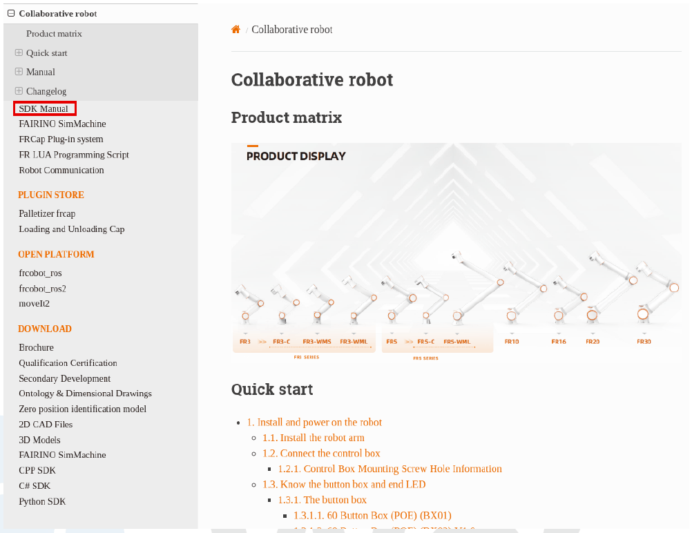
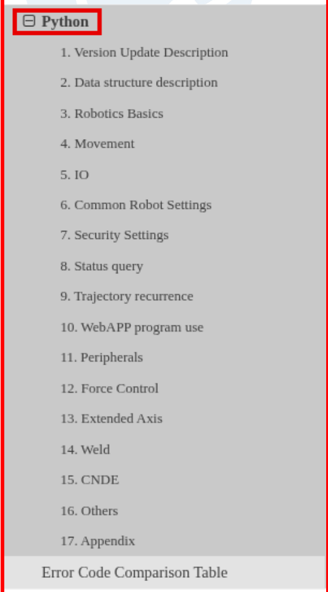
함수마다 설명과 예제가 있으므로, 이 자료를 참고해 개발하십시오.
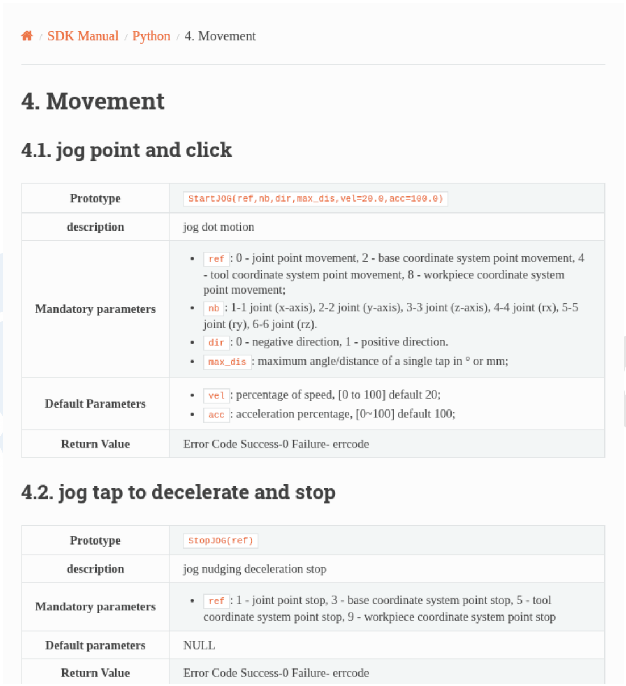
개발 사례와 예제
SDK를 활용한 개발 사례 (WeGo Robotics 유튜브): https://youtu.be/YPLGYPv6cLs
관련 예제는 FAIRINO GitHub를 참고하십시오: https://github.com/FAIR-INNOVATION
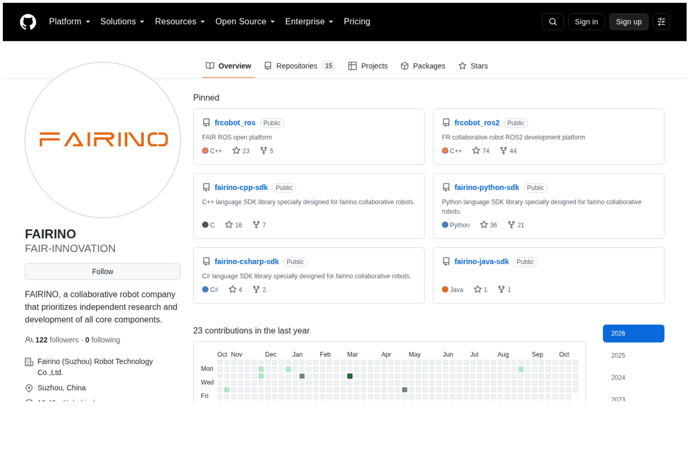
기능 안전 모드에서는 SDK로 로봇을 제어하는 기능이 기본으로 꺼져 있습니다(8장). 개발 PC가 192.168.58.x 대역에 있는지와 함께 확인하십시오. SDK의 I/O 번호는 7장에 있습니다.
유지 보수
FAIRINO가 권하는 점검 주기와 청소 방법, 시계 전지, 데이터 백업, 보관과 운반입니다. 점검에서 이상이 보이면 바로 고치고, 보증 기간에 손상을 발견하면 go.support@wego-robotics.com 으로 문의하십시오.
점검 주기 문서
| 항목 | 방법 | 주기 |
|---|---|---|
| 베이스 고정 볼트 * | 기능 — 토크 렌치로 규정 토크 확인(1장) | 매달 |
| 엔드 툴 고정 볼트 * | 기능 — 토크 렌치로 확인 | 매달 |
| 관절 뒷덮개 * | 육안 — 금 · 손상 | 6개월 |
| 관절 뒷덮개 나사 | 기능 — 제자리에 단단히 조여 있는지 | 6개월 |
| 관절 고무링 | 육안 — 마모 · 손상 | 6개월 |
| 로봇 케이블과 연결부 | 육안 — 컨트롤 박스와 로봇 사이 케이블 손상 | 6개월 |
* 표시 항목은 심한 충돌 뒤에도 바로 점검하십시오. 육안 점검은 가능하면 로봇을 영점 자세로 옮기고 컨트롤 박스 전원 케이블을 뺀 뒤 합니다.
| 항목 | 방법 | 주기 |
|---|---|---|
| 비상 정지 버튼 (버튼 박스 · 티칭 펜던트) | 기능 — 아래 시험 | 매달 |
| 단자대의 안전 입출력 | 기능 | 매달 |
| 버튼 박스의 시작 · 정지, 모드 전환 | 기능 | 매달 |
| 컨트롤 박스 공기 필터 | 육안 — 점검 · 청소 | 매달 |
| 버튼 박스 · 티칭 펜던트 케이블 | 육안 | 6개월 |
| 컨트롤 박스 단자 고정 | 기능 — 단자가 단단히 꽂혀 있고 풀린 선이 없는지 | 6개월 |
| 컨트롤 박스 접지 저항 | 기능 — 1 Ω 이하 | 매년 |
| 컨트롤 박스 주 전원 | 기능 | 매년 |
비상 정지 시험 문서
- 로봇 전원이 켜진 상태에서 비상 정지 버튼을 누르십시오.
- 로봇이 멈추고 관절 전원이 꺼지는지 확인하십시오.
- 비상 정지 버튼을 돌려 풀고 전원을 다시 켠 뒤 로봇을 활성화하십시오.
- 단자대에 연결한 외부 비상 정지 · 안전 정지 입력도 같은 방법으로 시험하십시오.
청소 문서
- 로봇팔: 천에 물, 이소프로필 알코올, 10 % 에탄올, 10 % 나프타 중 하나를 묻혀 먼지 · 기름을 닦습니다. 표백제는 묽게 탄 것도 쓰지 마십시오. 압축 공기는 부품을 손상시킬 수 있으므로 쓰지 마십시오. 절삭유 · 냉각수를 쓰는 환경이면 고무링을 자주 청소하거나 바꾸십시오. 관절에서 아주 적은 양의 그리스가 보이는 것은 기능 · 수명에 영향이 없습니다.
- 컨트롤 박스: 전원 케이블을 뺀 뒤 안쪽 먼지는 정전기 방지(ESD) 청소기로 치웁니다. 안쪽에 압축 공기를 쓰지 마십시오. 양옆의 공기 필터는 떼어 낮은 압력의 공기로 청소하고, 더럽거나 손상되었으면 바꿉니다. 팬 소리가 평소와 다르면 문의하십시오.
- 티칭 펜던트 화면: 희석제나 부식성 첨가물이 없는 순한 세제를 쓰고, 연마재로 닦지 마십시오.
시계와 백업 전지 문서
컨트롤 박스의 시계는 충전식 버튼 전지(MS621FE-FL11E, 3 V, 5.5 mAh)로 유지됩니다. 전원이 들어오면 자동으로 충전되며(완전 방전에서 약 5시간), 보통 5년 이상 씁니다. 3개월 넘게 전원을 넣지 않으면 전지가 방전되어 날짜가 틀릴 수 있습니다. 다시 켠 뒤 WebApp의 시간이 PC와 다르면 System → General settings의 시간 항목에서 Update를 눌러 PC 시간에 맞추십시오. 로그 시각이 이 시계를 따릅니다.
충전식이 아닌 전지를 넣지 마십시오. 전지 교체는 컨트롤 박스 덮개를 열고 납땜해야 하므로 WeGo에 문의하십시오.
데이터 백업 문서
Application → Tool App → Data Backup에서 툴 좌표, 시스템 설정 파일, 티칭 포인트, 사용자 프로그램 · 템플릿, 사용자 설정을 한 묶음으로 내려받고, 다시 가져올 수 있습니다. 같은 기능으로 다른 로봇에 설정을 옮길 수도 있습니다.
- 가져올 때 묶음이 손상되지 않았는지 검사하며, 로봇 모델 · 설치 방식 · 베이스 기울기 · 베이스 회전 · 동적 설정 다섯 가지가 대상 로봇과 같아야 가져올 수 있습니다.
- 가져오는 중에 실패하거나 전원이 나가면 제어기가 이전 상태로 되돌립니다. 컨트롤 박스를 다시 시작하고 다시 가져오십시오.
- 소프트웨어 업그레이드 전에는 반드시 백업하십시오. 업그레이드 · 다운그레이드는 WeGo에 문의하십시오(2장).
버전 정보와 고장 데이터 문서
System → About에 로봇 모델과 일련번호, WebApp · 컨트롤 박스 소프트웨어 버전, 하드웨어 · 펌웨어 버전이 나옵니다. System → General settings에서 고장 데이터 저장(Fault data)을 켜 두면 고장이 날 때 앞뒤 15초의 데이터가 저장되어, 나중에 내보낼 수 있습니다. 같은 화면에서 제어기 로그도 내보낼 수 있습니다. 문의할 때 함께 보내 주십시오(12장).
보관과 운반 문서
- 로봇팔과 컨트롤 박스는 한 쌍으로 보정되어 있습니다. 다른 로봇의 컨트롤 박스와 바꾸어 쓰면 다시 보정해야 합니다.
- 운반은 원래 포장으로만 하십시오. 포장재는 마른 곳에 보관하고, 포장 전에 로봇을 패킹 자세로 옮기십시오(4장).
- 혼자 들지 말고 여러 사람이 함께 들거나 크레인 · 지게차를 쓰십시오. 정밀 부품이 있으므로 심한 충격과 진동을 피하십시오. 포장에서 꺼내 설치할 때는 두 팔을 함께 붙잡고, 베이스 볼트를 다 조일 때까지 놓지 마십시오.
- 보관 온도는 −25 ~ 60 °C(서리 없음)입니다. 육안 점검 없이 6개월 넘게 보관하지 마십시오.
문제 해결
오류는 WebApp 위쪽 상태 표시줄에 나타납니다. 오류 코드 체계와 끝단 LED, 자주 만나는 증상과 조치를 정리했습니다. 전체 하위 코드와 서보 드라이브 · 넓은 전압 컨트롤 박스 고장 표는 FAIRINO 사용자 설명서의 Appendix에 있습니다.
오류 해제
‘해제 가능’ 오류는 원인을 없앤 뒤 WebApp 오른쪽 위의 오류 해제(Clear)로 지웁니다. 버튼 박스 BX02 V2.0의 일괄 해제 버튼이나, CI 기능 ‘모든 오류 해제’로도 지울 수 있습니다. ‘해제 불가’ 오류는 컨트롤 박스를 다시 시작해야 하며, 다시 나면 WeGo에 문의하십시오.
오류 코드 문서
제어기 오류는 주 코드와 하위 코드로 나옵니다. 주 코드의 뜻과 먼저 할 조치는 다음과 같습니다.
| 주 코드 | 분류 | 대표 원인과 조치 |
|---|---|---|
| 1 | 명령 포인트 오류 | 목표점에 닿을 수 없음, 관절 한계 · 속도 초과, 특이 자세, 툴 번호 불일치 등. 대부분 해제 가능합니다. 포인트 · 툴 · 속도를 고치고, 특이 자세면 PTP로 바꾸거나 포인트를 옮깁니다. 관절 명령과 실제 위치의 차이가 너무 큰 오류(하위 30)는 다시 시작해야 합니다 |
| 2 | 드라이버 고장 | 축 1 ~ 6 드라이버. 해제 불가입니다. 다시 시작하고, 반복되면 문의합니다 |
| 3 | 소프트 리밋 초과 | 축 1 ~ 6. 해제 가능합니다. 드래그 모드로 관절을 범위 안으로 옮깁니다(8장) |
| 4 | 충돌 | 축 1 ~ 6, 끝단(7), 외부 축(8). 해제 가능합니다. 원인을 없애고 부하 · 설치 방식 · 충돌 등급을 확인합니다(6 · 8장) |
| 5 · 6 | 슬레이브 수 · 슬레이브 오류 | 제어기에 연결된 슬레이브(컨트롤 박스 · 관절 드라이브 · 끝단 보드)의 수나 상태가 맞지 않습니다. 해제 불가입니다. 로봇 케이블 연결을 확인하고 다시 시작합니다 |
| 7 | I/O 오류 | 채널 · 값 오류, WaitDI · WaitAI 시간 초과, 안전 정지 발생(하위 15) 등. 대부분 해제 가능합니다. 대기 조건과 배선을 확인합니다. DO 24 V 단락 보호(16)와 위치 유지(브레이크) 보호(17)는 해제 불가이므로 배선을 점검하고 문의합니다 |
| 8 | 그리퍼 오류 | 그리퍼 동작 시간 초과. 해제 가능합니다. 그리퍼 설정과 활성화를 확인합니다(5장) |
| 9 | 파일 오류 | 설정 파일 버전 · 읽기 실패, 로봇 모델 불일치(7) · 모델 미설정(10). 해제 불가입니다. 로봇 모델 설정은 바꾸지 말고 문의합니다 |
| 10 | 특이 자세 | 포인트나 경로를 바꾸거나 PTP를 씁니다 |
| 11 | 드라이버 통신 오류 | 축 1 ~ 6. 해제 불가입니다. 로봇 케이블 연결을 확인하고 다시 시작합니다 |
| 12 | 외부 축 소프트 리밋 | 외부 축 1 ~ 4. 해제 가능합니다 |
| 13 | 설정 값 오류 | 툴 번호, 부하 무게 · 무게중심, 필터 시간, 충돌 등급 등이 범위 밖입니다. 해제 가능합니다. 값을 범위 안으로 고칩니다 |
끝단 LED 문서
| 상태 | LED |
|---|---|
| 제어기와 통신 연결 전 | 꺼짐 · 빨강 · 초록 · 파랑이 번갈아 켜짐 |
| 수동 모드 | 초록 켜짐 |
| 자동 모드 | 파랑 켜짐 |
| 드래그 모드 | 흰빛 청록 켜짐 |
| 활성화 | 노랑 두 번 깜빡임 |
| 영점 보정 완료 | 흰빛 청록 세 번 깜빡임 |
| 버튼 박스로 포인트 기록 · 실행 시작 · 정지 | 보라 · 청록 · 빨강 두 번 깜빡임 |
| 버튼 박스 오류 (버튼 박스를 쓸 때) | 빨강 켜짐 |
증상별 조치
| 증상 | 원인 | 조치 |
|---|---|---|
| WebApp에 접속되지 않음 | 노트북 IP가 192.168.58.x가 아님, 다른 포트에 연결함, WebApp과 WebRecovery의 네트워크가 겹침 | 5장 순서로 IP를 다시 설정하고, LAN 케이블이 비상 정지 버튼(버튼 박스)에 꽂혀 있는지 확인합니다 |
| 접속 IP를 바꾼 뒤 주소를 모름 | Eth1 주소 변경 | 버튼 박스 V2.0의 IP 재설정 버튼으로 기본값을 되돌리거나 WeGo에 문의합니다. WebRecovery(192.168.57.2:8050)에도 IP 재설정이 있지만, 그 화면의 업그레이드 · 다운그레이드는 건드리지 마십시오 |
| 브라우저가 안전하지 않은 연결이라고 경고 | V4.0.0부터 WebApp이 HTTPS를 쓰며, 로봇 인증서가 PC에 없음 | 경고 창의 인증서 정보에서 인증서를 내보내 .crt로 저장하고, PC의 신뢰할 수 있는 루트 인증 기관에 설치합니다
(FAIRINO 문서 Safety → WebApp Communication Encryption, Windows 기준) |
| 티칭 펜던트가 연결되지 않음 | 티칭 펜던트 사용이 꺼져 있음 (최신 WebApp 기본값) | 4장 참고 상자대로 켜고 재부팅합니다 |
| 로봇이 활성화되지 않음 | 비상 정지가 눌려 있음, 단자대의 안전 입력 단락 배선이 빠짐 | 비상 정지를 풀고, EI · SI 배선을 확인합니다(7장) |
| 드래그 모드에 들어가지 않거나 팔이 처지 · 들림 | 부하 · 설치 방식이 실제와 다름 | 6장대로 부하와 설치 방식을 바로잡습니다 |
| 충돌 오류가 자주 남 | 부하가 틀림, 충돌 등급이 너무 민감, 속도가 높음 | 부하를 확인하고 충돌 등급 · 속도를 조정합니다(6 · 8장) |
| 프로그램이 시작되지 않음 | 수동 모드, 오류가 남아 있음 | 오류를 해제하고 자동 모드로 바꾼 뒤 시작합니다(9장) |
| 프로그램에서 I/O가 바뀌지 않음 | 그 채널에 기능이 지정되어 있음 | 기능을 지정하지 않은 채널을 씁니다(7장) |
| SDK가 연결되지 않음 | 기능 안전 모드에서 SDK 제어가 꺼져 있음, 개발 PC 대역이 다름 | 8장 통신 포트에서 켜고, 192.168.58.x 대역을 확인합니다 |
| 날짜 · 시간이 틀림 | 시계 백업 전지 방전 | 시간을 맞추고 전원을 켜 두어 충전합니다(11장) |
| 백업을 가져오지 못함 | 모델 · 설치 방식 등이 다름, 묶음 손상 | 대상 로봇의 설정을 확인하고 다시 내보냅니다(11장) |
WeGo에 문의할 때
go.support@wego-robotics.com 으로 다음을 보내 주십시오: 로봇 모델과 일련번호, System → About의 버전 정보, 오류 코드 · 메시지와 화면 사진, 무엇을 하다가 났는지, 가능하면 고장 데이터와 제어기 로그(11장).
빠른 참조
켜고 접속하기 (3 · 5장)
- 비상 정지 해제, 동작 범위 비움
- 컨트롤 박스 전원 → 끝단 LED 초록
- 노트북 IP 192.168.58.x
- 브라우저 192.168.58.2 → 로그인
- 활성화
끄기 (3장)
- 프로그램 정지
- 상태 조회 끄기
- 상태 Stopped 확인
- 전원 끄기
- 다시 켤 때는 1분 뒤
툴을 바꾼 뒤 (6장)
- 설치 방식 확인
- toolcoord0 적용 → TCP 보정 · 적용
- 부하 입력 또는 자동 식별
- 충돌 등급 확인
- 낮은 속도로 시험
첫 프로그램 (9장)
- 수동 모드, 포인트 저장
- Program → Coding → New
- PTP · Lin: Add → Apply → Save
- 한 줄씩 실행해 확인
- 자동 모드 → 시작
| 항목 | 값 |
|---|---|
| WebApp (Eth1, 버튼 박스 포트) | 192.168.58.2 · 노트북은 192.168.58.x (192.168.58.2 제외) |
| WebRecovery (Eth0) | 192.168.57.2:8050 · 업그레이드 · 다운그레이드 임의 조작 금지 |
| WebApp 계정 | admin / 123 — 바꾸어 쓰십시오 |
| 안전 설정 비밀번호 | 12345678 (FAIRINO 문서의 기본값) — 바꾸어 쓰십시오 |
| SDK 포트 SDK | XML-RPC 20003, 상태 수신(CNDE) 20005, UDP 명령 20007 |
| 작업 | 메뉴 |
|---|---|
| 설치 방식 · 툴 · 작업물 좌표 · 부하 | Initial → Base → Installation · TCP · Workpiece · Payload (6장) |
| I/O 기능 · 별칭 · 필터 | Initial → Base → I/O setup (7장) |
| 그리퍼 | Initial → Peripherals → Gripper (5장, 한국어 화면: 초기설정 → 주변기기 → 그리퍼) |
| 안전 설정 | Initial → Safety (8장) |
| 포인트 · 프로그램 | Program → Points · Coding (9장) |
| 시스템 로그 | Status → System Log |
| 패킹 자세 · 데이터 백업 | Application → Tool App → Robot packing · Data Backup (4 · 11장) |
| 네트워크 · 시간 · 티칭 펜던트 사용 | System → General settings (5 · 11장) |
| 버전 정보 | System → About (업그레이드는 WeGo 문의) |
FAIRINO 공개 자료
| 자료 | 어디서 |
|---|---|
| 협동로봇 사용자 설명서 (설치 · 안전 · 프로그래밍 · 부록 오류 표) | fairino-doc-en.readthedocs.io/latest → Collaborative robot |
| SDK 설명서 (C++ · C# · Python · Java) | 같은 사이트 → SDK Manual |
| FR Lua 프로그래밍 스크립트 설명서 | 같은 사이트 → FR LUA Programming Script |
| 도면 · 3D 모델 · DH 파라미터 · 로봇 소프트웨어 | 같은 사이트 → Download |
| SDK · ROS · ROS 2 저장소 | github.com/FAIR-INNOVATION |